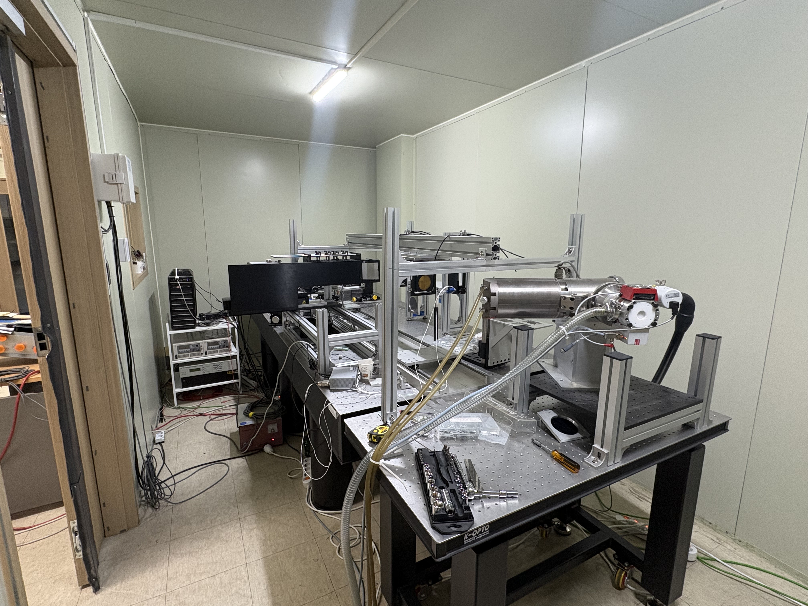

Research Equipment Details
High-Performance Workstations
Our laboratory operates a variety of computational nodes for deep learning model training and large-scale data analytics.
• Dual NVIDIA RTX A6000 48GB Workstation
• Single NVIDIA RTX 6000 ADA 48GB Workstation
• Single NVIDIA RTX PRO 5000 Blackwell 48GB Workstation

X-ray Grating Interferometer (talint edu)
The talint edu system is our core instrument used to perform non-destructive evaluations on material microstructures via X-ray grating interferometry setups. It delivers high-resolution radiographic metrics to back up materials science and innovative clinical diagnostic research.
